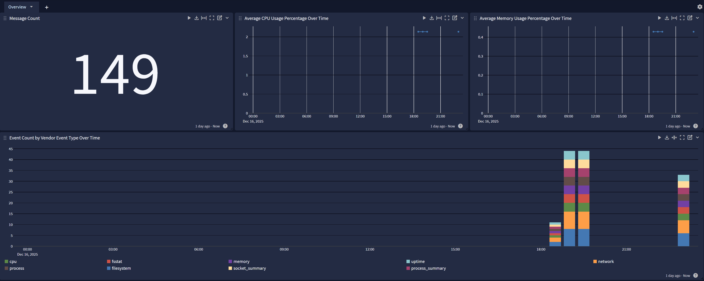
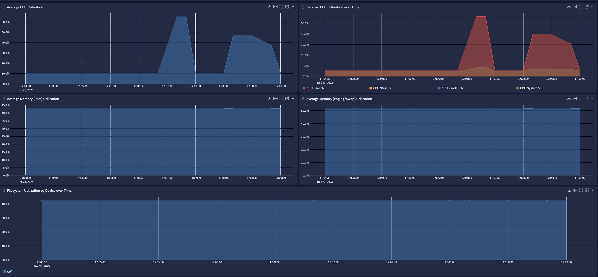

Metricbeat is a lightweight agent that collects system and service performance metrics. This pack normalizes and enriches Metricbeat data for consistent host and resource monitoring.
The Metricbeat Spotlight comes ready to use with pre-built dashboard views including:
Metricbeat Overview
Saved Search: Host Investigator
Metricbeat 7.x and 8.x
Graylog version 6.2.0+
A configured Beats input on Graylog server (See "Create Beats Input" below)
This technology pack includes 1 stream:
This technology pack includes 1 index set definition:
{"timestamp":1761766791.724,"version":"1.1","host":"CGARCIA-LT","short_message":"-","_gim_event_type_code":"[000000]","_original_message":"-","_event_received_time":"2025-10-29T19:39:51.724Z","_vendor_agent_id":"0b3ba278-e625-4187-a9a5-da5e0872de25","_gl2_remote_ip":"192.168.81.1","_gl2_remote_port":58328,"_vendor_metricbeat_@metadata_version":"9.2.0","_metricbeat_system_cpu_idle_pct":17.8609,"_illuminate_message_size_post":1127,"_event_source":"CGARCIA-LT","_gl2_source_input":"68fbad34d84a7eddaca6c0f5","_metricbeat_metricset_period":10000,"_vendor_host_cpu_idle_norm_pct":0.893,"_metricbeat_agent_ephemeral_id":"ecd68133-69ca-4b5e-939a-ae9dde8c26bc","_gl2_processing_timestamp":"2025-10-29 19:39:51.725","_illuminate_message_size_pre":1053,"_gim_event_type":"[message]","_vendor_service_type":"system","_gl2_source_node":"158f7e92-8da4-4b45-982c-ee2dd302b99f","_gl2_processing_duration_ms":16,"_gim_event_category":"[message]","_gl2_accounted_message_size":1281,"_metricbeat_system_cpu_system_pct":1.0922,"_gim_event_subcategory":"[message.log_message]","_streams":"[68ffb26f31d55d7ace4789e6]","_event_duration":1000,"_gl2_message_id":"01K8RQQPHC000VRGEVFW37X3E7","_metricbeat_host_cpu_usage":0.107,"_event_source_hostname":"CGARCIA-LT","_vendor_event_type":"cpu","_event_start":"2025-10-29T19:39:52.416Z","_timestamp_original_recorded":"2025-10-29T19:39:52.416Z","_vendor_event_source_version":"9.2.0","_vendor_host_cpu_core_count":20,"_vendor_host_cpu_total_norm_pct":0.107,"_gl2_receive_timestamp":"2025-10-29 19:39:51.709","_beats_type":"metricbeat","_vendor_ecs_version":"8.0.0","_vendor_host_cpu_user_norm_pct":0.0523,"_vendor_event_category":"system.cpu","_event_source_product":"metricbeat","_vendor_metricbeat_@metadata_type":"_doc","_metricbeat_system_cpu_total_pct":2.1391,"_metricbeat_system_cpu_user_pct":1.0469,"_illuminate_message_overhead_perc":7.027540360873694,"_vendor_host_cpu_system_norm_pct":0.0546,"_vendor_metricbeat_@metadata_beat":"metricbeat","_illuminate_message_overhead":74,"_vendor_product":"system"}
Rules to parse, normalize, and enrich Metricbeat log messages
Graylog Information Model message categorization for process and system metric events
A spotlight providing overview dashboards for Metricbeat events and a saved search including host-level CPU, memory, paging, and filesystem utilization
The content pack supports the following log types:
system.cpu
system.memory
system.filesystem
system.fsstat
system.network
system.process
system.process.summary
system.socket.summary
system.load
system.uptime
GIM categorization is provided for the following event categories. Only system.process events receive a specific GIM code; all other metric types are categorized as generic messages.
| Event Category | gim_event_type_code | GIM Category | GIM Subcategory | GIM Event Type |
|---|---|---|---|---|
| system.process | 199990 | process | process.default | process message |
| system.cpu | 000000 | message | message.log_message | message |
| system.filesystem | 000000 | message | message.log_message | message |
| system.fsstat | 000000 | message | message.log_message | message |
| system.load | 000000 | message | message.log_message | message |
| system.memory | 000000 | message | message.log_message | message |
| system.network | 000000 | message | message.log_message | message |
| system.process.summary | 000000 | message | message.log_message | message |
| system.socket.summary | 000000 | message | message.log_message | message |
| system.uptime | 000000 | message | message.log_message | message |
| Field Name | Example Value | Field Type | Description |
|---|---|---|---|
| event_source_product | metricbeat | keyword | Source product that generated the event |
| event_source | metricbeat-demo-host | keyword | Host reporting metrics |
| host_id | abcd1234efgh5678ijkl9012mnop3456 | keyword | Unique identifier of the reporting host |
| host_architecture | x86_64 | keyword | Host CPU architecture |
| host_os_name | Ubuntu | keyword | Host operating system name |
| host_os_type | linux | keyword | Host operating system type |
| host_os_kernel_release | 5.15.0-91-generic | keyword | Host kernel release version |
| host_os_version | 22.04 | keyword | Host OS version |
| host_ip_list | [192.168.1.10, fe80::1] | array | List of host IP addresses |
| host_mac_list | [00:0c:29:ab:cd:ef] | array | List of host MAC addresses |
| vendor_event_category | system.cpu | keyword | High-level category of the Metricbeat event |
| vendor_event_type | cpu | keyword | Specific type of Metricbeat event |
| vendor_service_type | system | keyword | Metricbeat service type |
| event_duration | 1234567 | long | Event collection duration in nanoseconds |
| cpu_utilization_total | 0.1234 | float | Total CPU utilization (normalized) |
| cpu_utilization_iowait | 0.001 | float | CPU iowait utilization (normalized) |
| cpu_utilization_user | 0.05 | float | CPU user utilization (normalized) |
| cpu_utilization_system | 0.03 | float | CPU system utilization (normalized) |
| cpu_utilization_steal | 0.0 | float | CPU steal utilization (normalized) |
| cpu_cores | 4 | long | Number of CPU cores |
| memory_total_bytes | 68411056128 | long | Total memory in bytes |
| memory_utilization_used | 0.4288 | float | Memory utilization percentage |
| memory_paging_total_bytes | 72706023424 | long | Total swap/paging space in bytes |
| memory_paging_utilization_used | 0.5165 | float | Swap/paging utilization percentage |
| filesystem_device | /dev/sda1 | keyword | Filesystem device name |
| filesystem_mount_point | / | keyword | Filesystem mount point |
| filesystem_type | ext4 | keyword | Filesystem type |
| filesystem_total_bytes | 107374182400 | long | Total filesystem size in bytes |
| filesystem_used_bytes | 53687091200 | long | Used filesystem space in bytes |
| filesystem_free_bytes | 53687091200 | long | Free filesystem space in bytes |
| filesystem_utilization_used | 0.50 | float | Filesystem utilization percentage |
| network_name | eth0 | keyword | Network interface name |
| destination_bytes_sent | 152243268 | long | Bytes received on interface (inbound) |
| source_bytes_sent | 42077017 | long | Bytes sent from interface (outbound) |
| destination_packets_sent | 226974 | long | Packets received on interface |
| source_packets_sent | 160209 | long | Packets sent from interface |
| process_name | nginx | keyword | Process name |
| process_id | 1234 | keyword | Process ID |
| process_parent_id | 1 | keyword | Parent process ID |
| process_command_line | /usr/sbin/nginx -g daemon on | keyword | Full process command line |
| process_path | /usr/sbin/nginx | keyword | Process executable path |
| process_command_args | [-g, daemon on] | array | Process command arguments |
| process_user_name | www-data | keyword | User running the process |
| system_uptime_seconds | 86400 | long | System uptime in seconds |
| vendor_fsstat_count | 3 | long | Number of filesystems |
| vendor_fsstat_total_size_total | 2046020284416 | long | Total size across all filesystems |
| vendor_fsstat_total_size_used | 864241790976 | long | Used space across all filesystems |
| vendor_fsstat_total_size_free | 1181778493440 | long | Free space across all filesystems |
| vendor_metricbeat_system_load_1 | 0.01 | float | 1-minute load average |
| vendor_metricbeat_system_load_5 | 0.04 | float | 5-minute load average |
| vendor_metricbeat_system_load_15 | 0.07 | float | 15-minute load average |
| vendor_metricbeat_system_load_cores | 3 | long | Number of cores for load calculation |
| vendor_process_summary_total | 365 | long | Total number of processes |
| vendor_process_summary_running | 12 | long | Number of running processes |
| vendor_socket_all_count | 180 | long | Total socket count |
| vendor_socket_all_listening | 38 | long | Total listening sockets |
| vendor_socket_tcp_all_count | 100 | long | TCP socket count |
| vendor_socket_tcp_all_established | 43 | long | Established TCP connections |
| vendor_socket_udp_all_count | 80 | long | UDP socket count |
One beats input can service multiple log sources; therefore, this step is not required if a beats input has already been configured.
On the Select Input drop-down menu, select the System menu and then choose Inputs.
Select Beats from the Select Input drop-down menu.
Click Launch New Input.
Assign a node or select Global mode.
Set the Title, Bind Address, and listening Port. For example:
Title: "Beats input 5044"
Bind address: "0.0.0.0" to listen on all interfaces
Port: "5044"
Make sure the option "Do not add Beats type as prefix" is not selected. Pipeline processing rules reference incoming data by field name and the pipeline will not function correctly if this prefix is omitted.
Save the input settings.
If the input does not start automatically, select Start Input to begin listening for and processing new Beats messages (including Metricbeat messages).
Metricbeat collects system and service performance metrics from both Windows and Linux hosts.
All metrics are sent in JSON format through the configured Beats input (port 5044 by default) to Graylog for parsing and visualization.
This spotlight offers a dashboard with 2 tabs:

